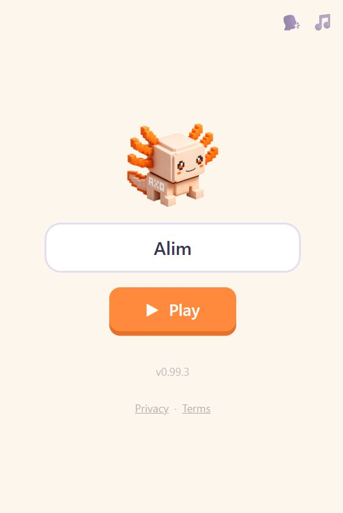
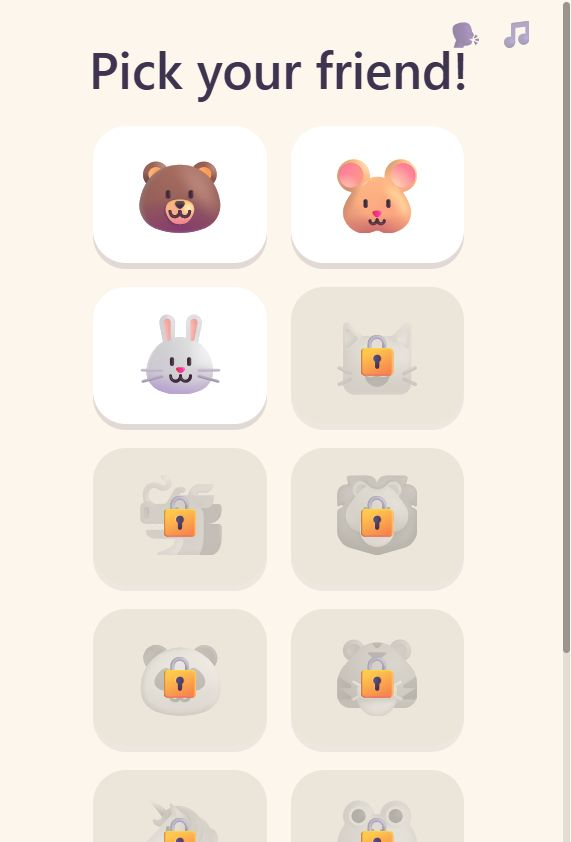
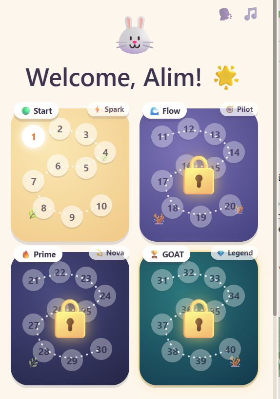
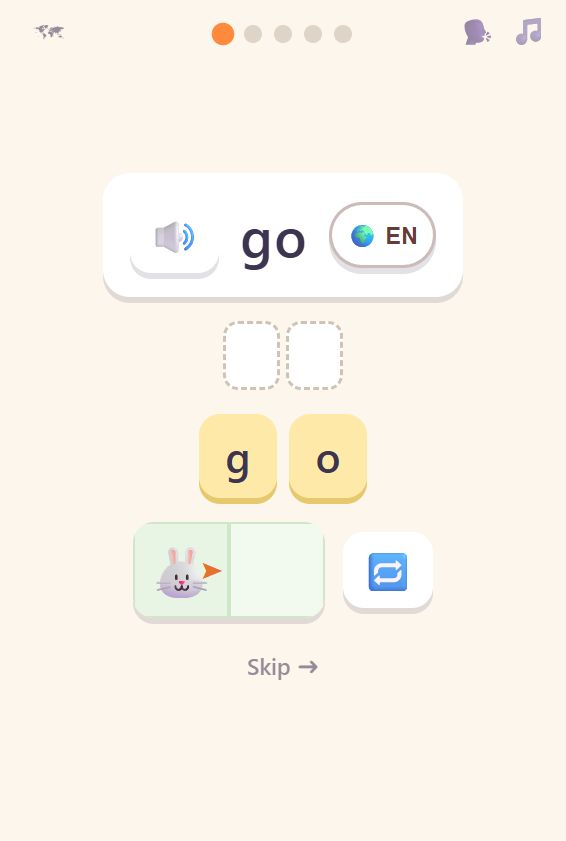
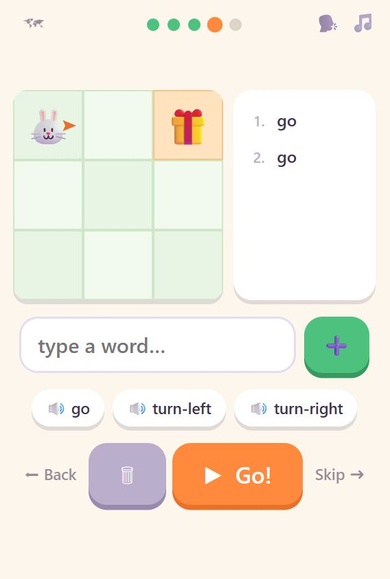

Инструкция для родителей
Как играть в axo
Пять экранов, которые ребёнок видит с самого начала.
Нажмите на любой номер на картинке – и его пояснение подсветится в списке рядом.

Начальный экран
Первое, что открывается. Ребёнок пишет своё имя и нажимает «Играть».
- Аксолотль axo – талисман игры.
- Поле для имени. Только имя, ничего больше – оно нужно, чтобы игра здоровалась с ребёнком и хранила его результаты на этом устройстве.
- Кнопка «Играть». С неё начинается всё.
- Два переключателя звука: 🗣 голос, который произносит слова, и 🎵 фоновая музыка. Каждый выключается отдельно и остаётся выключенным.
- Номер версии и ссылки «Конфиденциальность · Условия».

Выбор героя
Ребёнок выбирает животное, которым будет играть. В начале открыты трое: медведь, хомяк и кролик.
- Заголовок по-английски: «Pick your friend!». Интерфейс игры английский с первого экрана – на родной язык переводятся только подсказки.
- Три открытых героя: медведь, хомяк и кролик. Выбор ни на что не влияет в игре – это просто «мой персонаж».
- Закрытые герои под замком. Каждый открывается, когда ребёнок проходит определённый уровень. Это и есть награда за пройденный уровень.
Выбор героя появляется каждый раз, когда ребёнок начинает игру заново – многим детям это нравится больше, чем сам уровень.

Карта мира
Весь путь на одном экране, без прокрутки. Четыре острова – четыре этапа игры.
- Игра здоровается с ребёнком по имени, рядом – выбранный герой.
- Светящаяся точка – текущий уровень. Пройденные отмечаются галочкой, остальные просто пронумерованы. На каждом острове десять уровней.
- Значок острова, здесь «Spark». Ребёнок получает его, когда проходит остров целиком, и оставляет себе навсегда.
- Замок на закрытом острове. Откроется, когда ребёнок дойдёт до него. Замок здесь как обещание, а не как преграда: нажимать на него не нужно.
- Четыре острова – весь путь целиком: Start, Flow, Prime и GOAT, сорок уровней. Сейчас открыты Start и Flow, первые 20.
Ниже карты – большая кнопка «Let's go!». Она всегда продолжает с того места, где ребёнок остановился.
На карту можно вернуться в любой момент по значку карты в углу экрана. Нажатие на уже пройденный уровень открывает его заново – прогресс и рекорды при этом сохраняются.

Знакомство со словом
Перед каждым уровнем – карточка нового слова. Это и есть момент, когда английское слово входит в игру.
- Само слово, крупно и по-английски. Здесь это go – «иди».
- Значок звука. Нажатие произносит слово вслух. Слово звучит и само, когда карточка открывается.
- Кнопка «🌍 EN» – язык подсказок, 11 языков на выбор. Здесь же открывается перевод слова: он доступен по нажатию, но не показывается сам, чтобы ребёнок сначала попробовал понять слово через действие.
- Буквы и пустые клетки над ними. На этом экране слово набирается нажатием на буквы, а не с клавиатуры: слово ещё совсем новое.
- Полоска с героем. Как только слово собрано, герой сразу выполняет действие – ребёнок видит, что слово значит. Кнопка справа повторяет показ.
Точки наверху показывают, сколько шагов в уровне и на каком ребёнок сейчас. Значок карты в левом углу возвращает к карте мира, «Skip» пропускает шаг.

Первое задание
Здесь ребёнок уже сам набирает команды и составляет из них программу.
- Игровое поле. Оранжевая стрелка у героя показывает, куда он смотрит – это и решает, куда его поведёт команда go.
- Цель. Это всегда предмет – подарок, мяч, сундук. К нему и нужно привести героя.
- Программа – команды, набранные ребёнком, одна под другой и пронумерованные. Когда программа запускается, выполняемая строка подсвечивается вместе с движением героя.
- Поле ввода. Ребёнок печатает команду сам, с обычной клавиатуры, и добавляет её в программу зелёной кнопкой.
- Подсказки-слова со значком звука. Нажатие вставляет слово и произносит его. Это помощь по запросу: ребёнок сам решает, когда она нужна.
- «Go!» запускает программу. Рядом – корзина, чтобы стереть набранное, а по краям «Back» и «Skip».
Ошибиться здесь нельзя. Если команда неверная, герой просто не идёт дальше, и можно попробовать снова. В игре нет проигрыша, таймеров и штрафов.